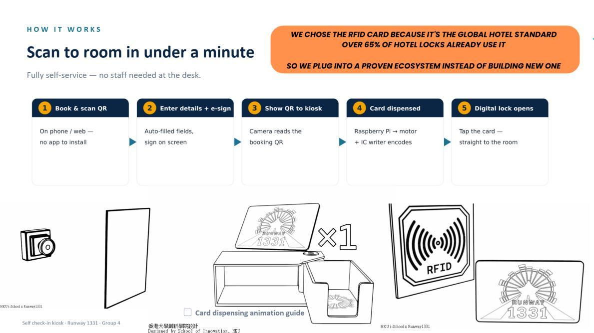

01GATE24
A low-cost self check-in kiosk for Runway 1331. A pre-arrival web flow and Raspberry Pi card dispenser let late-night guests collect an encoded RFID room card without extending reception hours.
Innovation technologist · Student builder
01 / Selected work
Projects shaped by research, prototyping, and a bias toward practical outcomes.

01A low-cost self check-in kiosk for Runway 1331. A pre-arrival web flow and Raspberry Pi card dispenser let late-night guests collect an encoded RFID room card without extending reception hours.
A retrieval-based chatbot built with Nabiha around a curated database of more than 100 essays and articles, pairing a coded interface with an evidence library.
A verified student housing marketplace concept for incoming Mainland students, combining 3D tours, academic-length leases, check-in escrow, and roommate matching.
 04
04
Developed in technical collaboration with researchers from HKU’s Faculty of Medicine and the Advanced Biomedical Instrumentation Centre (ABIC).
Our undergraduate team is translating the Rhythma research team’s saliva-based cortisol sensing technology into an accessible wellness product concept. Our role centres on user-focused device design, prototyping, and MVP development rather than the core molecular sensing technology.
 05
05
Three days on the HKU campus surrounded by builders, mentors, and early-stage ideas. The event brought the local student innovation community into one room.
The person behind the prototypes
I’m a Year 2 BSc Innovation and Technology student at The University of Hong Kong. My work moves between software, AI, product strategy, and hands-on hardware.
Long before university, robotics competitions and student leadership taught me to treat constraints as design material. I still work that way: observe closely, make a prototype, and let testing sharpen the idea.
03 / Recognition
Robot Performance Champion
01Hong Kong Selection · 1st Runner-up
02Hong Kong Island Region Champion
03Raimondi College
04Leadership and community service
0504 / Contact